Public transport
Below you can find information on how to reach the historic center and other places of interest using public transport services.
Nearest tram stop
- The nearest tram stop is Novoli - Torre degli Agli. It is only a 2-minute walk from Via della Torre degli Agli, 8. When you leave the house, walk along Via della Torre degli Agli and turn right onto Via di Novoli, crossing the street to reach the stop.
- You can buy tram tickets from the automatic machines available at all tram stops. Buy your ticket before boarding, validate it when you get on, and from that moment, the ticket will be valid for 90 minutes, allowing you to use it for further rides, if made before the ticket expires.
- You can find more information about the tram network on the operator's website: gestramvia.it
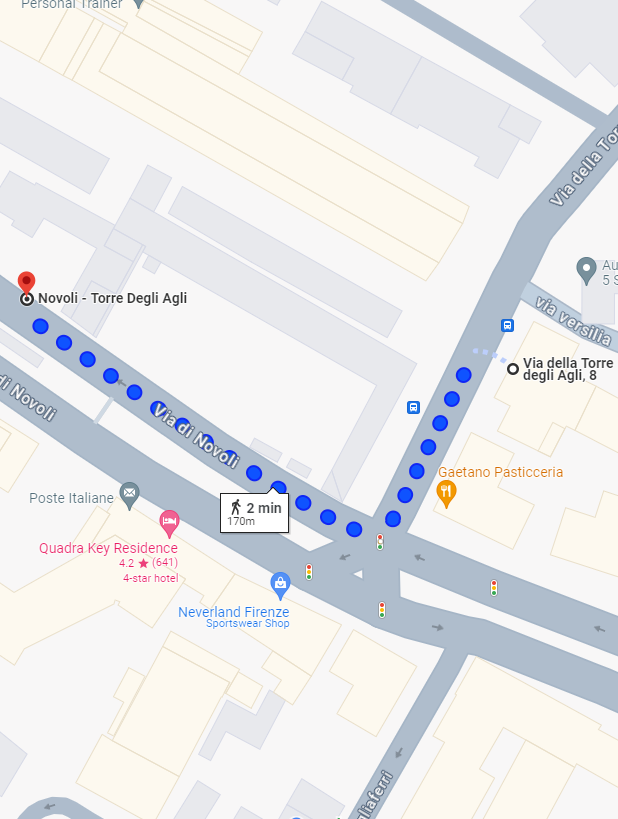

To the historic center
- The vibrant heart of the city, rich in art and history, with masterpieces like the Duomo, Ponte Vecchio, and the Uffizi Gallery.
- From Via della Torre degli Agli 8, reach the tram stop and take the Tram T2 from Novoli - Torre Degli Agli to the stop Unità, which is located near Santa Maria Novella train station. The tram ride takes about 19 minutes, with trams passing every 6 minutes.
- Upon getting off the tram, take a moment to admire the Basilica of Santa Maria Novella and its namesake square before exploring the heart of the historic center.

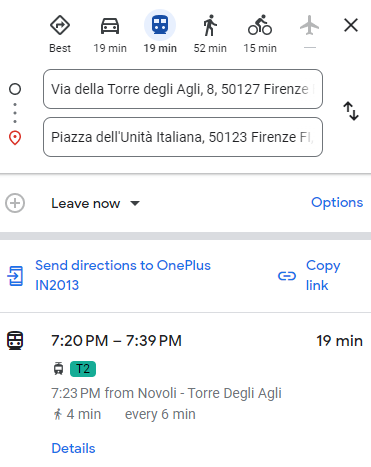
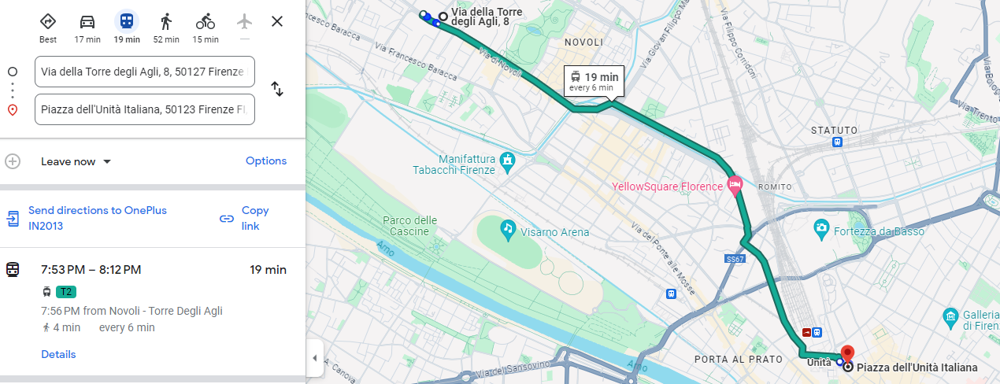
To Piazzale Michelangelo
- A panoramic terrace offering a breathtaking view of Florence, with one of the famous copies of Michelangelo's David dominating the view and the ancient Abbey of San Miniato al Monte just a short walk away.
- From Via della Torre degli Agli 8, reach the tram stop and take the Tram T2 from Novoli - Torre Degli Agli to the stop Unità, which is located near Santa Maria Novella train station. The tram ride takes about 19 minutes, with trams passing every 6 minutes.
- From the Unità tram stop, walk for 2 minutes to the Fratelli Rosselli bus stop. From here, take the bus 13, which goes from Fratelli Rosselli to Piazzale Michelangelo.
- Alternatively, you can also reach Piazzale Michelangelo on foot from the Unità tram stop. The walk takes about half an hour and allows you to pass through some of the city's most beautiful and renowned areas.
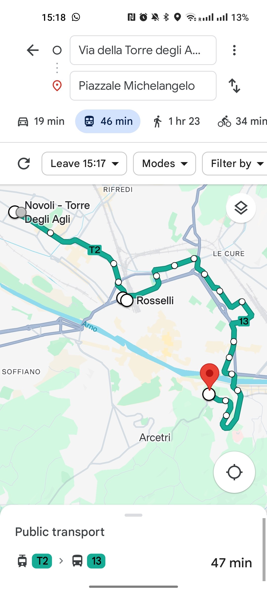
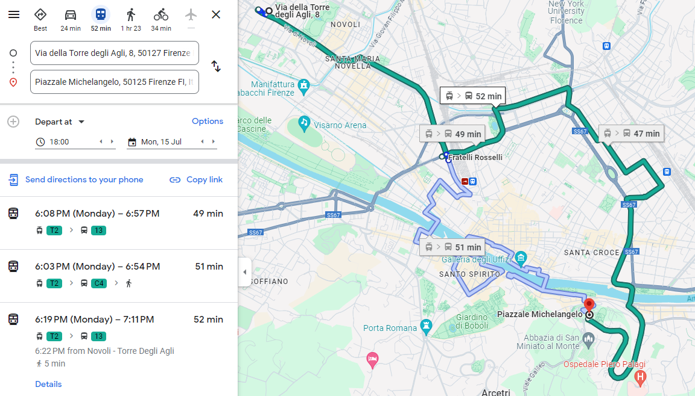
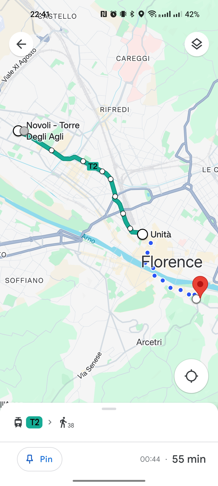
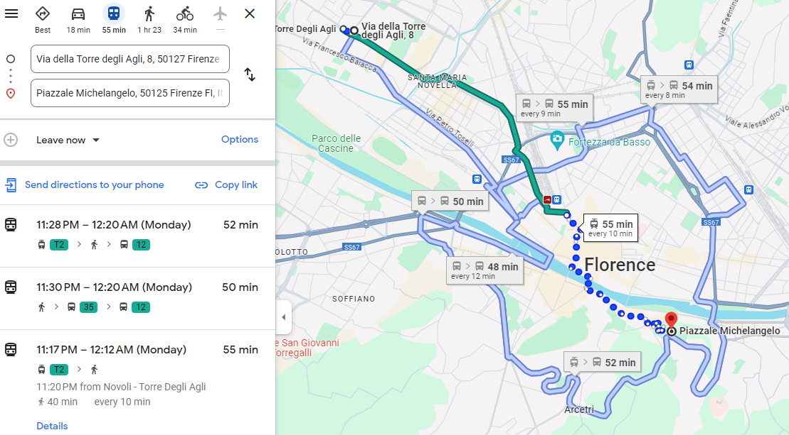
To the Parco delle Cascine
- The largest urban park in Florence, located along the Arno River, ideal for walks, sports, and relaxation, with green spaces and cultural events.
- If you are a Rock music lover, don't miss the summer event in Florence, the Firenze Rocks. Firenze Rocks is also the largest music festival in Italy and is held right at the Parco delle Cascine, at the Visarno Arena, as usual every year in June.
- From Via della Torre degli Agli 8, you can reach the Parco delle Cascine on foot. The walk takes about half an hour and allows you to pass by some historical and cultural points of interest such as the Puccini Theater and the Manifattura Tabacchi, a former tobacco factory transformed into a cultural and creative space, hosting events, exhibitions, and innovative projects.
- Alternatively, you can also reach the Parco delle Cascine by taking part of the route with the tram and the rest with the bus. From Via della Torre degli Agli 8, reach the tram stop and take the Tram T2 from Novoli - Torre Degli Agli to the stop San Donato - Università. From here, walk to the Redi San Donato bus stop and take the bus 55 to the stop Olmi Galoppo.
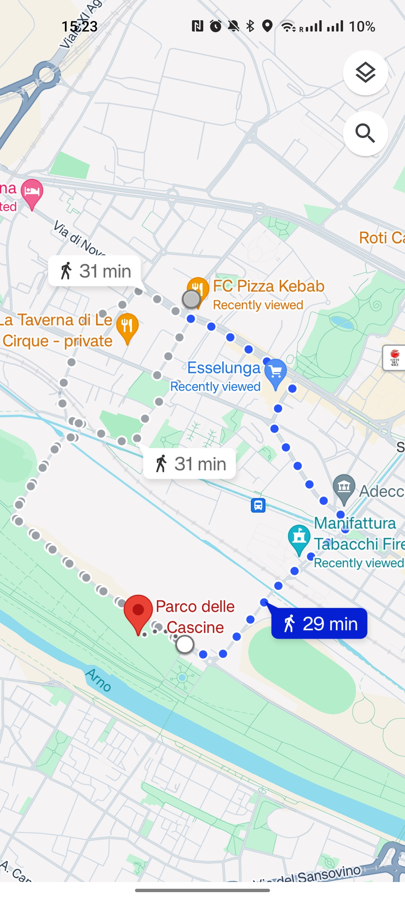
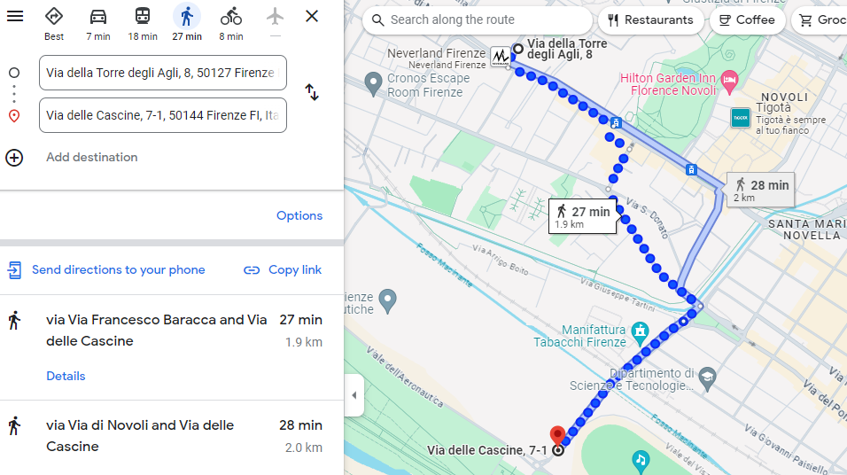
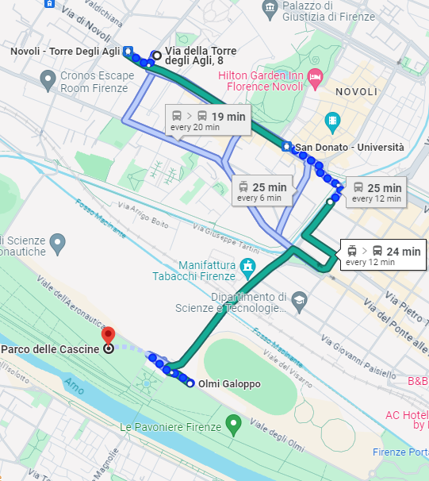
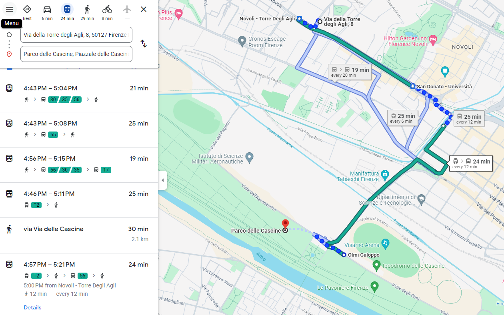
To Fiesole
- Ancient hilltop village near Florence, known for its Etruscan and Roman ruins, as well as its splendid views over the Arno valley.
- From Via della Torre degli Agli 8, reach the tram stop and take the Tram T2 from Novoli - Torre Degli Agli to the stop Unità, which is located near Santa Maria Novella train station. The tram ride takes about 19 minutes, with trams passing every 6 minutes.
- From the Unità tram stop, walk for 2 minutes to the Stazione Nazionale bus stop. From here, take the bus 7, which goes from Stazione Nazionale to Fiesole.
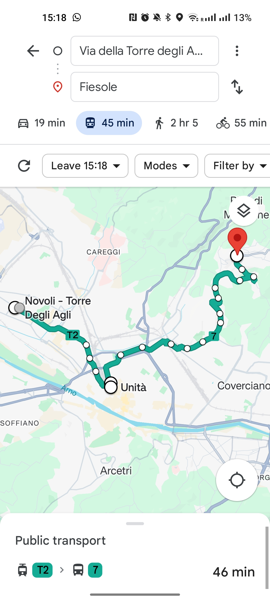
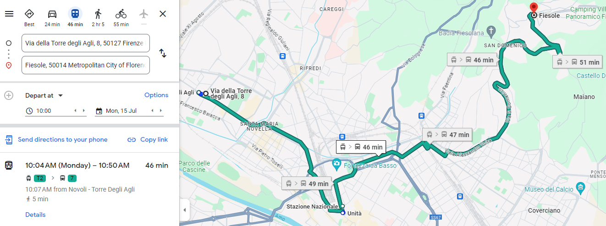
Notes
- The apartment offers a strategic base for exploring the city.
- It is a 2-minute walk from the Novoli - Torre degli Agli tram stop, which is on the Tram T2 line that connects the airport to the city center and Santa Maria Novella train station.
- 10 minutes to the airport.
- 19 minutes to Santa Maria Novella train station.
- 19 minutes to the city center.